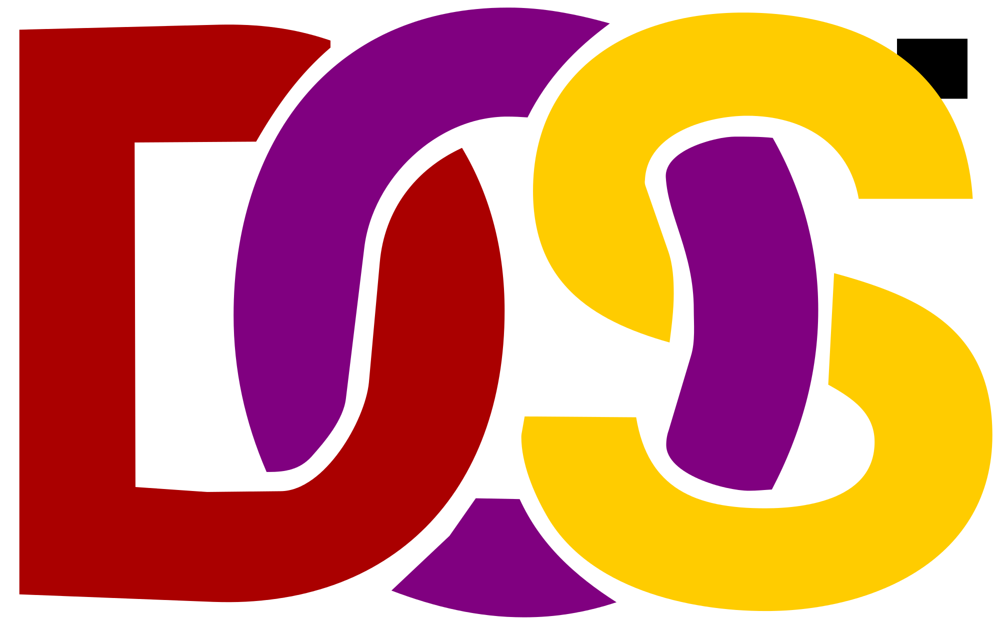
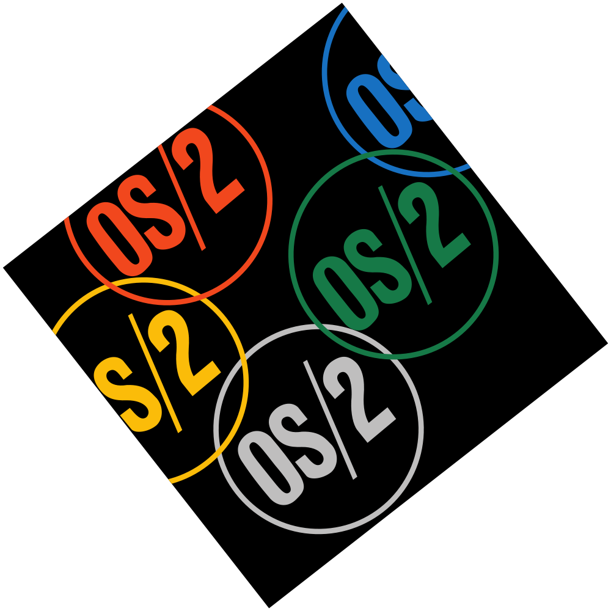

Что такое операционная система?
Операционная система (ОС, Operating system, OS) — это специальный набор программ, благодаря которому все системы компьютера взаимодействуют как между собой, так и с пользователем. Простыми словами, операционная система – это основа, без которой невозможно работать ни с одной программой на компьютере.
Большинство операционных систем имеют графическую оболочку для комфортного взаимодействия пользователя с техникой. Графический интерфейс — «лицо» каждой ОС, по которому его несложно отличить от других.
Функции операционной системы:
- Руководство загрузкой процессора.
- Управление свободными ресурсами памяти.
- Установка и обновление приложений и программ.
- Распределение потоков процессов и поддержка многозадачности.

Состав операционных систем
- Ядро ОС – центральная часть операционной системы, обеспечивающая приложениям координированный доступ к файловой системе, и обмену файлами между ПУ.
- Командный процессор - программный модуль ОС, ответственный за чтение отдельных команд или же последовательности команд из командного файла, иногда называют командным интерпретатором.
- Драйверы устройств - специальные программы, которые обеспечивают управление работой устройств и согласование информационного обмена с другими устройствами, а также позволяют производить настройку некоторых параметров. Каждому устройству соответствует свой драйвер.
- Утилиты - вспомогательные компьютерные программы в составе общего программного обеспечения, делающие удобным и многосторонним процесс общения пользователя с компьютером.
- Для удобства пользователя в состав операционной системы обычно входит также справочная система. Справочная система позволяет оперативно получить необходимую информацию как о функционировании операционной системы в целом, так и о работе ее отдельных модулей.
Основные семейства ОС
- ОС семейства DOS. Первый представитель этого семейства – система MS-DOS была выпущена в 1981 году в связи с появлением компьютеров IBM PC. ОС семейства DOS обладают следующими характерными особенностями: она однопользовательская, имеет командный интерфейс, 16-разрядная, имеет модульную структуру, а также небольшой объем оперативной памяти. Существенный недостаток ОС семейства DOS – отсутствие средств защиты от несанкционированного доступа. 
- ОС OS/2 (Operating System / 2) была разработана фирмой IBM в 1987 году. ОС семейства OS/2 обладают следующими характерными особенностями: они однопользовательские, многозадачные (позволяет организовать параллельную работу нескольких прикладных программ). Имеет графический интерфейс, 32-разрядная. Недостаток OS/2 – малое число приложений для нее, что делает эту систему непопулярной. 
- ОС UNIX была разработана для различных компьютеров: от суперкомпьютера до миникомпьютеров. ОС семейства UNIX обладает следующими характерными особенностями: многопользовательские, многозадачные, сетевые, командные. Могут быть 32-разрядными и 64-разрядными. Имеют несколько видов оболочек (Shell). Для них также характерно широкое применение утилит и использование конвейеров из нескольких программ. Linux (полное название GNU/Linux) – это UNIX-подобная ОС.
- ОС семейства WINDOWS. История Windows началась в 1985 году, когда появилась первая версия системы. В 1990 году вышла Windows 3.0, которая стала применяться на многих ПК. Последующие версии Windows были направлены на повышение надежности, на поддержку средств мультимедиа и работу в компьютерных сетях. ОС семейства Windows обладают следующими характерными особенностями: многопользовательские, многозадачные, бывают как сетевые, так и несетевые, графические, 32/64-разрядные.